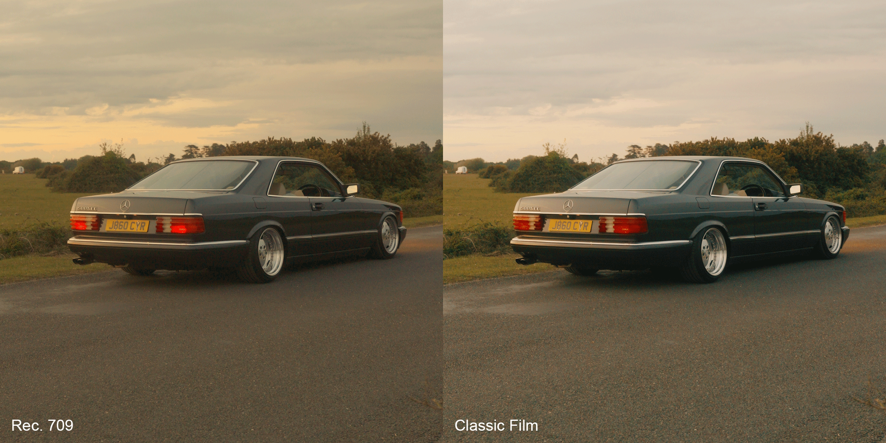
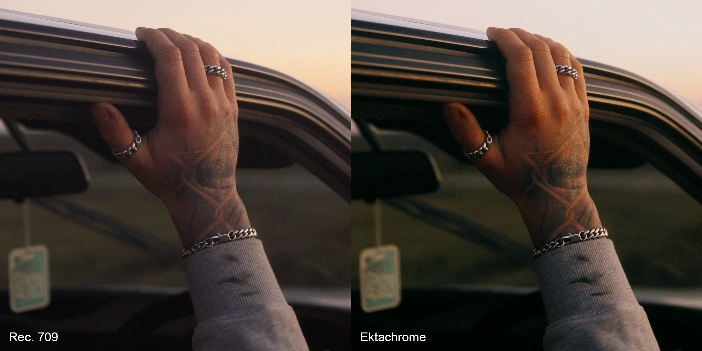
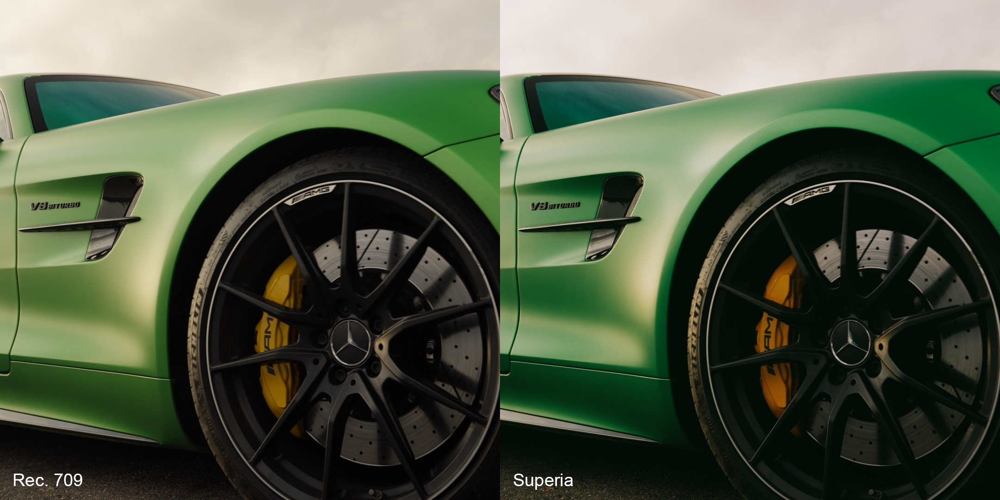
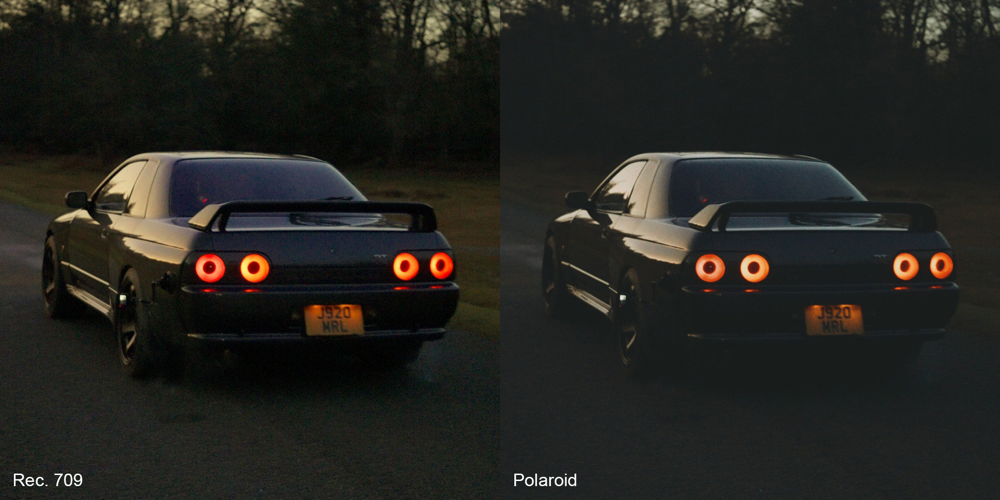
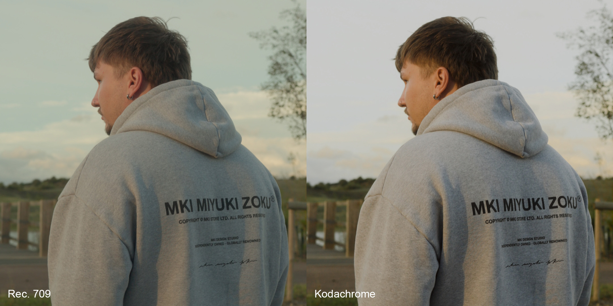

Drop these colour grades onto your footage and get a soft, cinematic film look in seconds. No colour grading experience needed.
The exact colour grades from my Reels. Five cinematic film LUTs plus one utility LUT. Includes a step-by-step guide so you get perfect results first time, no grading experience needed. Works with any camera and any editing software.
Trusted by 450+ creators
Get the Pack - £20A timeless, general-purpose film look. Slightly faded with gentle contrast and a nostalgic tone that works reliably across all lighting conditions.

A vibrant yet controlled Kodak-style colour grade. Warmer in tone, perfect for golden hour, with rich color separation.

A Fuji-inspired profile with subtle green bias and cooler balance. Clean skin tones with a distinctly analog character.

An atmospheric instant-film look with heavy fading and deeper shadows. Ideal for moody scenes, low light, etc.

A faded Kodachrome-style colour grade with contrast and washed colors. Perfect for bright, sunny conditions and classic film aesthetics.

Also included: A bonus utility LUT that makes your colours richer and more cohesive without looking oversaturated. Layer it on top of any grade as a finishing touch.
What other creators are saying, plus real project work, all graded with this pack.
LUCID Media
Head Videographer at Ludere
I've been looking for a good film LUT pack for too long, it's always the ones no one knows about that are the best! These are SO good.
@lucidmedia.ukRUSH
Media Production Group
Honestly really happy with these. Got exactly the look I was going for with very little effort!
@rush.ukFive cinematic film LUTs, each developed through real brand projects and designed to give your footage a distinct, organic film look. Plus one bonus utility LUT that adds richness and colour cohesion as a finishing touch.
A step-by-step guide is included so you get the best results on your first try, whether you're a complete beginner or an experienced editor. The guide covers how to apply the LUTs in DaVinci Resolve, Premiere Pro, and other popular editors.
Everything is delivered in the industry standard .CUBE format, which works with virtually every editing application. These work on standard (Rec.709) footage from any camera, including smartphones.
I'm a creative director and colourist. These are the same colour grades I use on professional brand shoots. I built this pack so you can get the same look without the learning curve.
These aren't generic presets pulled from a template. Each look has been developed and refined through real projects, and they're versatile enough to use straight out of the box or tweak to match your own style.
Every grade has been tested across different cameras, lighting conditions, and shooting scenarios. They're built to be reliable and consistent no matter what you're working with.